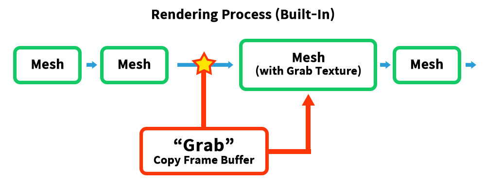
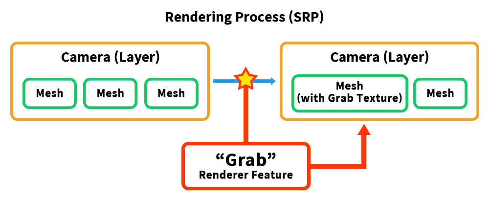
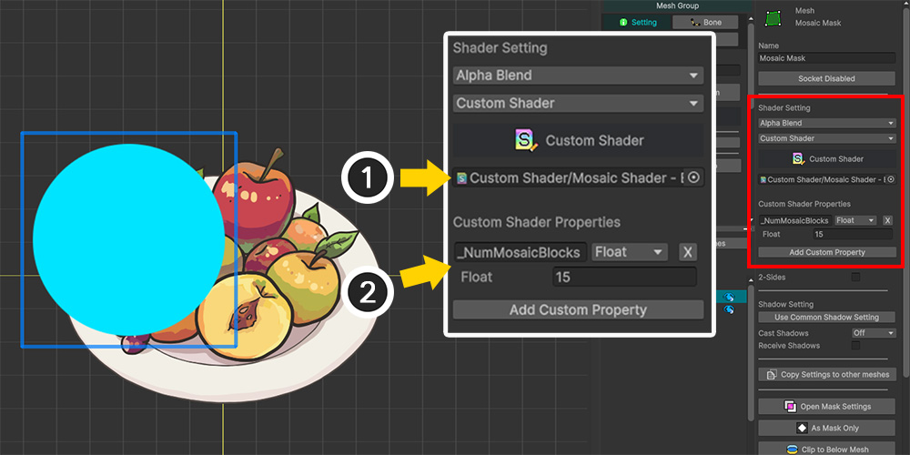
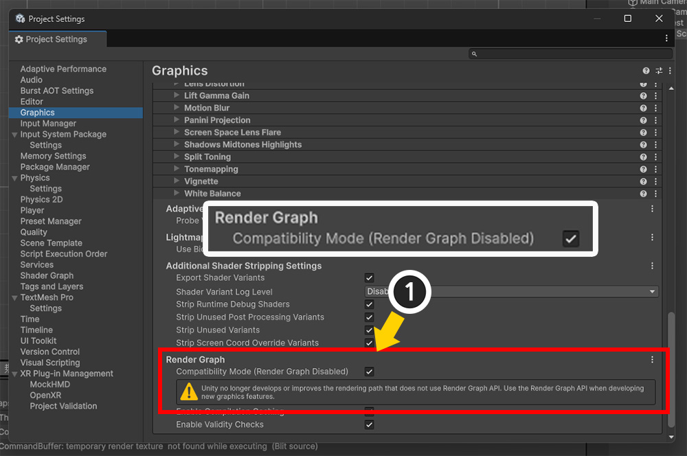
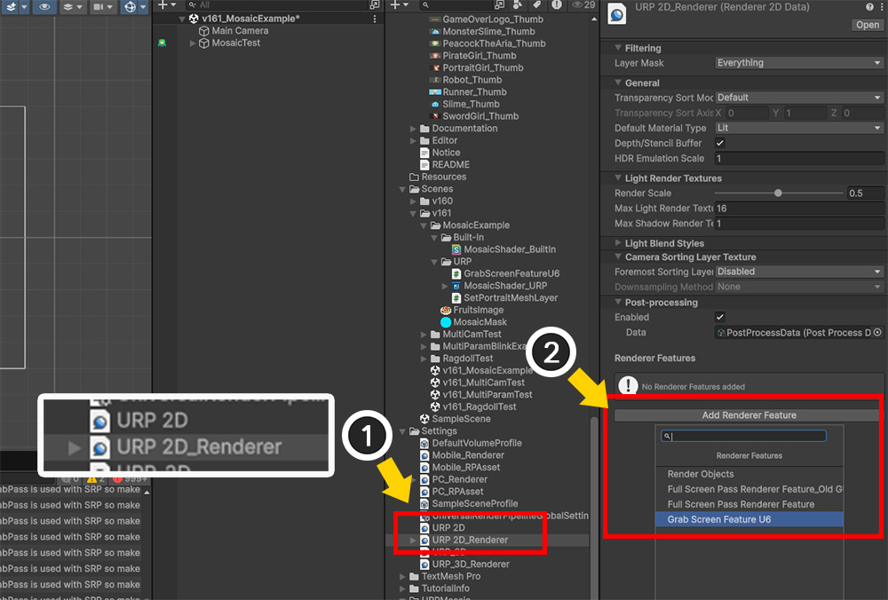
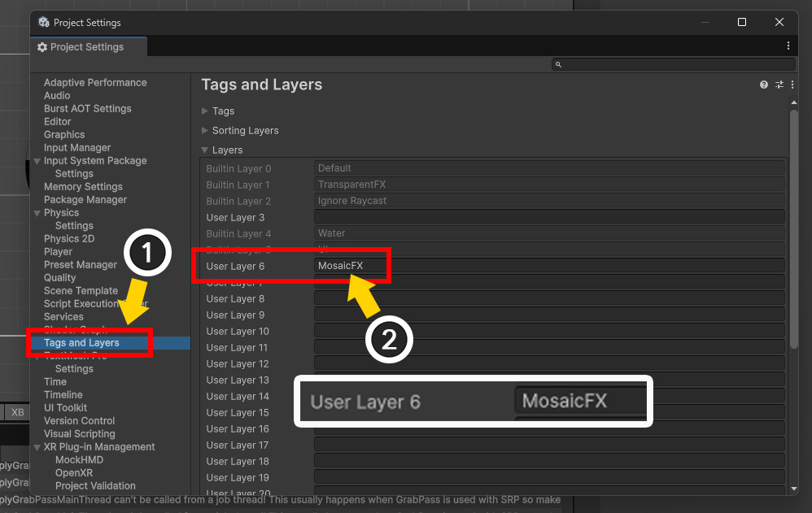
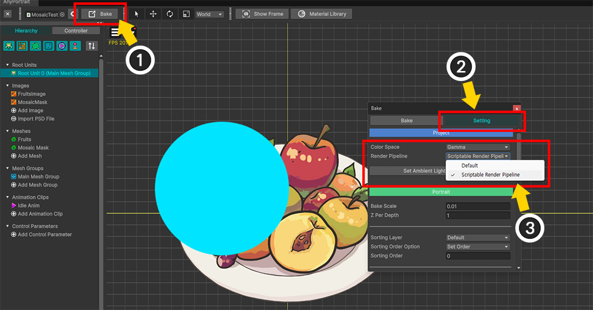

AnyPortrait > Manual > Mosaic effect using Grab Pass
Mosaic effect using Grab Pass
To implement special effects using AnyPortrait and Unity, you may need a texture representation of the "currently rendered screen."
Unity uses a feature called "Grab Pass" to retrieve the screen as a texture.
This page explains the Grab Pass, using the example of implementing the "Mosaic effect," a frequently requested feature.
Grab Pass and the Render Pipeline
To implement effects like mosaics, we need to retrieve the screen texture just before the mesh corresponding to the mosaic area is rendered.
This means that the rendering process must be paused and the frame buffer up to that point must be copied to a temporary texture.
This is accomplished using the "Grab Pass" function. (Unity Manual)
And you can easily implement screen effects by using the Grab Texture generated from this Grab Pass.
However, how you implement the effect using Grab Pass depends on your project's render pipeline.

In the Built-In Render Pipeline, you can freely call Grab Pass to retrieve Grab Texture while meshes are being rendered.
This is because Grab Texture is generated immediately when Grab Pass is specified in the shader that requires Grab Texture (in this case, the mosaic effect shader).

However, URP doesn't natively support Grab Pass.
While there is a shader function that functions similarly to Grab Pass, it's not suitable for this case because it only renders "opaque meshes".
Therefore, you need to write your own "Renderer Feature" that functions as Grab Pass.
However, Renderer Feature cannot be called during mesh rendering; it can only be called per camera and rendering event.
Therefore, to retrieve the "rendered meshes before mosaicing," you need to separate the camera.
Mosaic Effect in the Built-In Render Pipeline

We've set up the example as shown above.
We added an image and mesh to be the mosaic area and named it "Mosaic Mask."
Now let's write a shader that renders the mosaic effect. (Writing custom shaders)
Shader "Custom Shader/Mosaic Shader - BuiltIn"
{
Properties
{
_Color ("2X Color (RGBA Mul)", Color) = (0.5, 0.5, 0.5, 1.0)
_MainTex ("Main Texture (RGBA)", 2D) = "white" {}
// Number of mosaic blocks (based on Y-axis)
_NumMosaicBlocks ("Number of Mosaic Blocks (Y-Axis)", float) = 10.0
}
SubShader
{
Tags{ "RenderType" = "Transparent" "Queue" = "Transparent" "PreviewType" = "Plane" }
Blend SrcAlpha OneMinusSrcAlpha
LOD 200
// Call Grab Pass to get a Grab Texture.
GrabPass { "_CustomGrabTexture" }
Pass
{
Tags { "LightMode" = "ForwardBase" }
ZWrite Off
CGPROGRAM
#pragma vertex vert
#pragma fragment frag
#include "UnityCG.cginc"
struct appdata
{
float4 vertex : POSITION;
float2 uv : TEXCOORD0;
};
struct v2f
{
float2 uv : TEXCOORD0;
float4 vertex : SV_POSITION;
// A semantic for computing and passing UVs for Grab Texture
float4 grabPos : TEXCOORD1;
};
sampler2D _MainTex;
float4 _MainTex_ST;
half4 _Color;
// Grab Texture generated from Grab Pass
sampler2D _CustomGrabTexture;
// Mosaic count property variable
float _NumMosaicBlocks;
v2f vert ( appdata v )
{
v2f o;
o.vertex = UnityObjectToClipPos( v.vertex );
o.uv = TRANSFORM_TEX( v.uv, _MainTex );
// Calculate Grab UV.
o.grabPos = ComputeGrabScreenPos( o.vertex );
return o;
}
fixed4 frag ( v2f i ) : SV_Target
{
fixed4 col = tex2D( _MainTex, i.uv );
// Calculate the number of mosaic blocks on the X-axis by calculating the Aspect Ratio.
float aspect = _ScreenParams.x / _ScreenParams.y;
float2 nBlocks = floor ( float2 ( _NumMosaicBlocks * aspect, _NumMosaicBlocks ) );
// Get colors from Grab Texture by calculating mosaic UV.
fixed2 mosaicUV = round( i.grabPos.xy * nBlocks ) / nBlocks;
fixed4 grabCol = tex2D( _CustomGrabTexture, mosaicUV );
col.rgb = grabCol.rgb;
col.a *= _Color.a;
return col;
}
ENDCG
}
}
}
This shader takes a Grab Texture and applies it to the RGB of the mesh for rendering.
At this time, the round function and the _NumMosaicBlocks property are used to change the UVs in specific size units.

Return to the AnyPortrait editor.
(1) With the Mesh Group selected, select the "Mosaic Mask" mesh.
(2) In the Shader Setting option, change the "Material Set" value to "Custom Shader."

(1) Assign the previously created mosaic shader.
(2) Set the value of the "_NumMosaicBlocks" property in the shader code above here. Click the Add Custom Property button and set the property name, type, and value.

After Bake and returning to the Unity scene to run the game, you'll see the mosaic effect applied, as shown above.
Since the "Mosaic Mask" mesh is an object within AnyPortrait, you can make it transparent or allow it to move freely according to animation.
Mosaic Effect in URP
In URP, you need to write the following three scripts, including shaders:
1. Renderer Feature to Reproduce Grab Pass
: URP does not have a Grab Pass.
Therefore, you must create your own Renderer Feature to implement Grab Pass.
2. Script to change mesh layers
: Renderer Feature operates when the camera and layer change.
Therefore, the "normal meshes" and "mosaic mask meshes" must be placed on separate layers.
3. Mosaic Shader Graph
: You need to create a mosaic shader using Shader Graph.

First, let's implement Grab Pass by writing a Renderer Feature.
However, the Renderer Feature API has changed significantly since URP 13 and is incompatible with the other APIs.
Therefore, before writing a Renderer Feature, you must check the URP version.
(Related official manual)
(1) Open Unity's Package Manager and set Packages to "In Project."
(2) Installed Unity packages will be displayed. Select Universal RP.
(3) Check the version. In the image above, it's 12.1.1, so you need a script written before URP 13.
Rather than detailing the Renderer Feature on this page, we'll leverage an open-source script developed by an external developer.
If your URP version is older than 13, you can obtain the Renderer Feature for Grab Pass script from the following link.
GrabScreenFeature by Refsa (MIT License) : Github page, Download copy
If your URP version is 13 or later, you can obtain the Renderer Feature for Grab Pass (Including Unity 6) script from the following link.
Notably, this developer implemented two versions of Renderer Feature.
With the introduction of Render Graph in Unity 6, the APIs have changed.
Download the appropriate version based on whether you're using Render Graph, as described below.
- If using Render Graph: "GrabScreenFeatureRenderGraphAPI.cs"
- If not using Render Graph: "GrabScreenFeatureU6.cs"
GrabPassU6 by Smajlovycc (MIT License) : Github page, Download copy

Once you've prepared the Renderer Feature Script for your URP version, configure URP in your project.
Create and designate a URP Asset in Project Settings > Graphics > Default Render Pipeline.
Depending on your Unity version, you may also need to configure platform-specific render pipelines.

Unity 6 and later introduced a new feature called Render Graph.
Depending on whether you use this feature, the API for Renderer Feature changes.
If you don't use scripts for Render Graph, you can enable Compatibility Mode to use the Renderer Feature written with the legacy API.
Enabling this option disables Render Graph.

Now, let's apply the Renderer Feature.
(1) Select the URP Renderer Data asset from the URP asset applied to the project.
(2) Click the Add Renderer Feature button and select the Renderer Feature for Grab Pass that you previously downloaded from open source or created yourself.

Added Renderer Feature for Grab Pass.
Check or change some properties.
1. Texture Name
: This is the name of the Grab Texture.
Remember the name, as we will use it in the shader graph for the mosaic effect.
You can change it if necessary.
2. Layer Mask
: This option specifies the layers of the objects to be included in Grab Texture.
Select only the target layers to be included in the mosaic, as "None" or "Everything" will not work properly.
Here, only the "Default" layer is specified.
Earlier, we explained that "normal meshes" and "mosaic mask meshes" must be rendered separately.
Therefore, we need to separate the layers and cameras to ensure that the "mosaic mask mesh" is rendered separately.

(1) Open Project Settings > Tags and Layers.
(2) Create a layer named "MosaicFX" in the blank space under Layers.

(1) Duplicate the existing camera rendering the character ("Main Camera") and name it "Mosaic Camera." From the second camera onward, also delete the Audio Listener component.
(2) Change the Render Type to "Overlay."
(3) Set the Culling Mask value to select only the "MosaicFX" layer.

(1) Select the original camera, "Main Camera" again.
(2) Exclude the "MosaicFX" layer from the Culling Mask value.

(3) Register "Mosaic Camera" in Stack > Cameras.
The scene has been set up so that the "Mosaic Mask Mesh" can be rendered separately.
However, because the "Mosaic Mask Mesh" resides within the AnyPortrait character, it shares the same layer as the other meshes.
Therefore, we need to write a new script to render the mesh on the "MosaicFX" layer and the "Mosaic Camera" layer.
using UnityEngine;
using AnyPortrait;
public class SetPortraitMeshLayer : MonoBehaviour
{
public apPortrait portrait; // Target apPortrait
public string layerName = "Default"; // Name of the layer to be assigned
public string[] meshNames; // Names of the meshes to which layers are assigned
void Start()
{
SetPortraitMeshLayers();
this.enabled = false;
}
// A function that finds the target meshes and changes the layer.
private void SetPortraitMeshLayers()
{
int nMeshNames = (meshNames != null) ? meshNames.Length : 0;
if ( nMeshNames == 0 ) { return; }
// apPortrait may not be initialized, so we try to initialize it here.
portrait.Initialize();
// Change the name of the input layer to an int type variable.
int layer = LayerMask.NameToLayer( layerName );
for ( int i = 0; i < nMeshNames; i++ )
{
string meshName = meshNames[i];
apOptTransform targetTransform = portrait.GetOptTransform(meshName);
if ( targetTransform == null ) { continue; }
// Calls a function that changes the target's layer.
SetGameObjectLayer(targetTransform.gameObject, layer);
}
}
// Recursively changes the layer of the target and its child objects.
private void SetGameObjectLayer(GameObject targetObject, int layer)
{
if ( targetObject == null ) { return; }
targetObject.layer = layer;
// Also changes the layer of child objects.
int nChildren = targetObject.transform.childCount;
if ( nChildren == 0 ) { return; }
for ( int i = 0; i < nChildren; i++)
{
// Call recursively.
SetGameObjectLayer(targetObject.transform.GetChild(i).gameObject, layer);
}
}
}

(1) Create a new GameObject to apply the script.
(2) Add the script you created and set its values.
- Portrait: Specify the target character.
- Layer Name: Enter "MosaicFX," the layer where the mosaic mask mesh will be rendered.
- Mesh Names: Enter the name of the mosaic mask mesh within the mesh group.
Now finally, we create the "Mosaic Shader Graph".

Create a new shader graph of type "Sprite Unlit, Transparent, Alpha Blend".
You can learn how to write a shader graph for AnyPortrait at Related page, only the properties related to the mosaic effect are introduced here.
(1) In addition to the basic properties, add the properties "_NumMosaicBlocks (Float)" and "_GrabPassTransparent (Texture2D)".
(2) Set the properties of these two properties as follows:
1. _NumMosaicBlocks
: The number of mosaic blocks.
The property name is the same as the previously introduced Built-In mosaic shader property, and the mosaic mask mesh within the AnyPortrait character can pass the value.
2. _GrabPassTransparent
: The property name of the Grab Texture.
It must be the same as the "Texture Name" value of the Renderer Feature previously added as the Grab Pass.
The Show In Inspector (or Exposed, depending on the version) option must be disabled.
Please also change Scope to Global.

Complete the shader graph as shown in the image above.
(View larger image)
You can think of it as rewriting the mosaic shader from the Built-In Example in graph form.

Apply the mosaic shader for URP to the AnyPortrait character.
(1) Select the "Mosaic Mask" mesh.
(2) If the settings in the Built-In are complete, assign the "Mosaic Shader Graph Asset for URP" you just created to the Custom Shader.
(If the Custom Shader option isn't set, please refer to the corresponding section of the implementation description in the Built-In.)

(1) Select the Root Unit.
(2) Click the Material Library button.
(3) Create and select a material set from the URP material presets.
(4) Click the Default Material button to turn it on.

(1) Click the Bake button.
(2) Select the Settings tab.
(3) Change the Render Pipeline value to "Scriptable Render Pipeline."

If you do Bake and run the game, you can see that the mosaic effect works normally even in URP.